Chapter 5. 아날로그 전송(Analog Transmission)¶
1절. 디지털 -> 아날로그 변환¶
디지털 -> 아날로그 변환¶
- 디지털 데이터 정보를 기반으로 아날로그 신호 특성 중 하나를 바꾸는 과정
- 디지털 데이터(Digital Data)를 아날로그 신호(Analog Signal)로 변환 후 전송
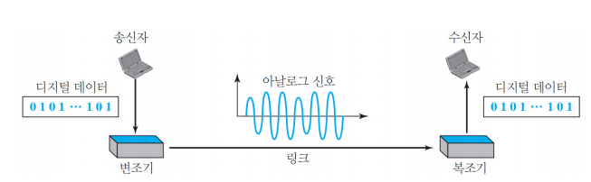
디지털 -> 아날로그 변환 유형¶
| 변환 유형 | 영문 약어 | 영문 |
|---|---|---|
| 진폭 편이 변조 | ASK | Amplitude Shift Keying |
| 주파수 편이 변조 | FSK | Frequency Shift Keying |
| 위상 편이 변조 | PSK | Phase Shift Keying |
| 직교 진폭 변조 | QAM | Quadrature Amplitude Modulation |
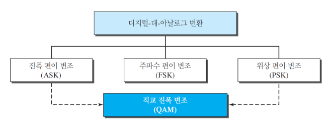
반송파 신호(Carrier Signal)¶
- 아날로그 전송에서 신호의 기반이 되는 고주파 신호
반송파 신호 특성¶
- 진폭(Amplitude)
- 주파수(Frequency)
- 위상(Phase)
변조(Modulation or Shift Keying)¶
- 반송파 신호의 특성 중 한 가지 이상을 변화시키는 방식
디지털 -> 아날로그 변환의 여러 관점¶
- 대역폭(BandWidth)
- 데이터 요소 대 신호 요소
- 데이터 전송률 대 신호 전송률
- 비트 전송률(bps) : N, 데이터율, 초당 비트 수
- 보오율(baud) : S, 신호율, 초당 신호 단위 수
- r : 하나의 신호 요소에 전달되는 데이터 요소의 수
사용 공식 : \(S = N × \frac{1}{r}\) baud
- 디지털 데이터의 아날로그 전송 : 보오율은 비트 전송률과 같거나 적음
진폭 편이 변조(ASK : Amplitude Shift Keying)¶
- 신호 요소 생성을 위해 반송파 진폭 변화
- 주파수 & 위상 : 진폭이 변화 시 일정하게 유지
- 잡음(Noise)에 약함
- noise는 진폭에 많은 영향
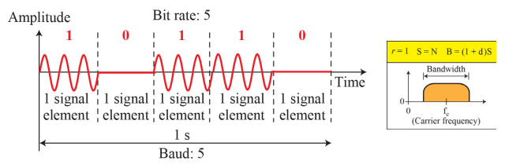
수식 정리
\(B = (1+d) × S\)
B : 대역폭(Bandwidth)
S : 신호율(Signal Rate : Baud Rate)
d : 변조 과정 관련 요소(0과 1 사이)
\(f_c\) : 캐리어 주파수(Carrier Frequency), 대역폭 중간
2진 ASK(BASK : Binary ASK)¶
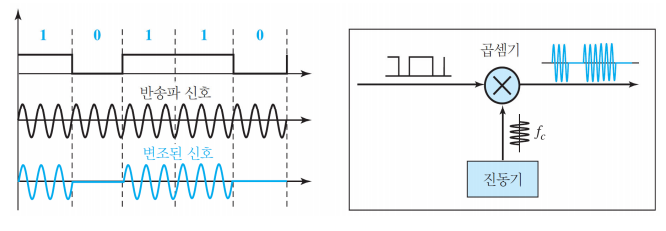
-
디지털 데이터(Digital Data)를 디지털 신호(digital Signal)로 만든 후 캐리어 신호(Carrier Signal)과 곱셈
-
두 가지 전압 사용
-
에너지 소모 감소
-
하나의 값은 전압 없음
- 온-오프 변조(OOK : On-Off Keying)
-
전송 에너지 소비 감소
-
다준위 ASK(Multilevel ASK)
- 2 Level 이상의 진폭(Amplitude)를 사용하는 ASK
주파수 편이 변조(FSK : Frequency Shift Keying)¶
- 데이터를 나타내기 위한 신호의 주파수 변화
- 데이터 요소가 다른 값을 가질 경우 주파수 변화
- 최고 진폭과 위상은 일정
- 진폭 편이 변조(ASK)의 잡음(Noise)문제 해결
- \(B = (1+d) × S + 2Δf\)
- \(2Δf\)는 최소 \((1+d) × S\) 이상의 값
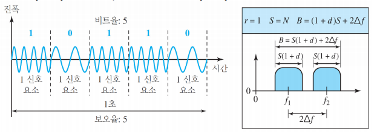
2진 FSK(BFSK : Binary FSK)¶
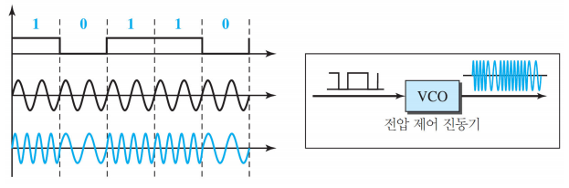
다준위 FSK(MFSK : Multilevel FSK)¶
- 다수의 주파수로 multi-bit 전송
- ex) 2bit 전송 시 4개의 주파수 사용
- \(2\) \(bit\) => \(2^2\) \(freq\)
- \(2Δf\)는 최소 \((1+d) × S\) 이상의 값이므로 \(d = 0\) 인 경우 최소값 \(S\) 를 가짐
- 즉, \(2Δf = S\)
- \(B\) (BandWidth) $ = (1 + d) × S + (L - 1) 2Δf$
- => \(B = L × S\)
위상 편이 변조(PSK : Phase Shift Keying)¶
- 서로 다른 신호 요소 표현을 위해 신호의 위상 변화
- 최대 진폭과 주파수는 일정
- 현재 PSK는 ASK, FSK보다 많이 사용
- 잡음(Noise)에 매우 강함
- ASK는 잡음(Noise)에 약함
- Carrier signal이 한 개
- FSK는 2개 필요
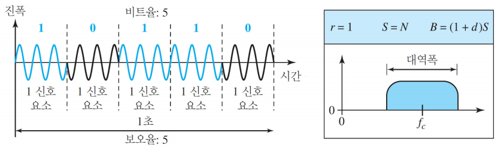
2진 PSK(BPSK : Binary PSK)¶
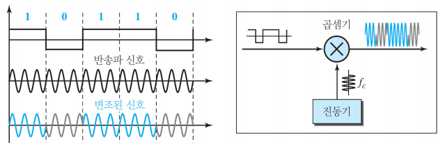
- BPSK의 대역폭(Bandwidth)은 BASK와 동일
- ASK와 동일하지만 unipolar NRZ 대신 polar NRZ 사용
직교 위상 편이 변조(QPSK : Quadrature PSK)¶
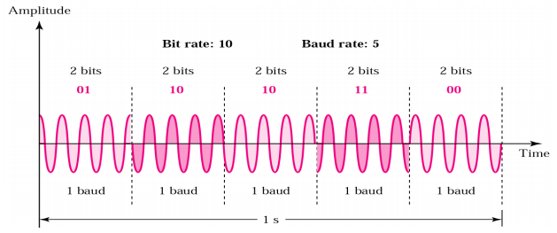
- 2개의 BPSK 사용 시 4개의 위상 사용 가능
- 4가지의 다른 위상을 갖는 신호(Signal) 사용
-
1개의 신호(Signal)에 2 bit의 데이터 전송 가능
-
ex) \(L = 4\) 인 경우, \(L = 2^2\), r = 2
-
신호 요소마다 2비트 사용하는 QPSK 구현
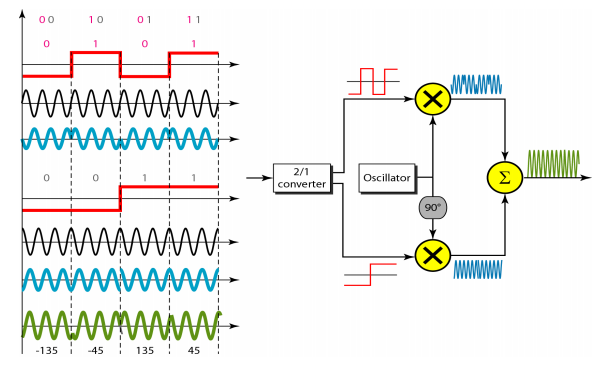
성운 그림(Constellation Diagram)¶
- 2개의 동-위상과 직각위상의 반송파 신호를 사용하는 경우, 신호 요소의 진폭과 위상 결정에 도움
| 요소 | 설명 |
|---|---|
| 수평선 X축 | 동위상 반송파 |
| 수직선 Y축 | 직각 위상 반송파 |
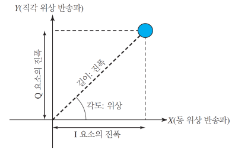
직교 진폭 변조(QAM : Quandrature Amplitude Modulation)¶
- QAM = ASK + PSK : 진폭(Amplitude)과 위상(Phase)의 동시 변화
- PSK : 위상 편이 변조
- 위상의 작은 변화를 구분하는 장비 능력에 좌우
- PSK로 bps를 높이는 것의 한계
- ASK : 진폭 편이 변조
- 잡음(Noise)에 약한 특성
- 진폭(Amplitude)의 변화 수 < 위상(Phase)의 변화 수
- QAM의 대역폭(BandWidth)
- ASK or PSK의 대역폭과 동일
- ASK와 PSK의 장점을 동일하게 보유
QAM의 변형 : 성운 그림¶
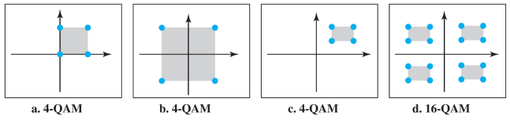
2절. 아날로그 -> 아날로그 변환¶
아날로그 -> 아날로그 변환¶
- 아날로그 신호로 아날로그 정보 표현
- 매체가 특정 대역 통과 특성 보유
- 특정 대역만이 사용 가능할 경우 변조 필요
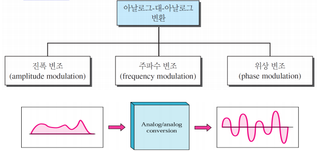
아날로그 -> 아날로그 변환 유형¶
| 변환 유형 | 영문 약어 | 영문 |
|---|---|---|
| 진폭 변조 | AM | Amplitude Modulation |
| 주파수 변조 | FM | Frequency Modulation |
| 위상 변조 | PM | Phase Modulation |
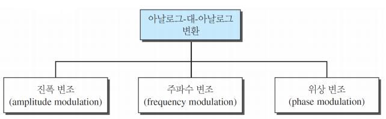
진폭 변조(AM : Amplitude Modulation)¶
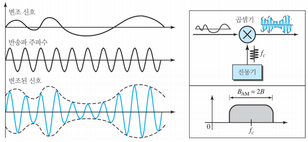
- 변조 신호의 진폭 변화에 따라 반송파의 진폭이 같이 바뀌는 방식의 변조
- 반송파 주파수, 위상은 유지
- 변조 신호(Modulation Signal)은 반송파(Carrier)의 엔벨롭(Envelop)
- 엔벨롭(Envelop)
- 진동 신호의 상·하 극한점을 부드럽게 연결하는 곡선
- 순간 진폭의 변화를 일반화한 형태
- AM에 필요한 총 대역폭은 변조 신호(음성 신호 : 오디오 등)의 대역폭에 따라 결정
진폭 변조의 대역폭(BandWidth)¶
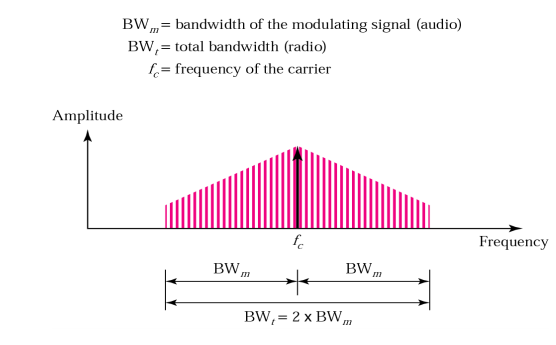
- \(B_{AM} = 2 × B\)
- 대역폭(BandWidth)는 반송파 신호(Carrier Signal)를 중심으로 변조 신호(Modulation Signal) 대역폭(BandWidth)의 2배
AM 라디오의 표준 대역 할당¶
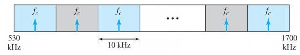
- 오디오 신호(음성 및 음악)의 대역폭은 5 kHz
- AM 방송국은 10 kHz 마다 대역폭 할당
주파수 변조(FM : Frequency Modulation)¶
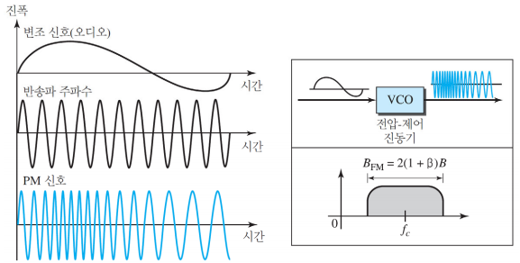
- 반송파 신호(Carrier Signal)의 주파수가 변조 신호의 전압 준위 변화를 따라가도록 변조
- 최대 진폭과 위상은 유지
- FM의 대역폭은 변조 신호(음성 신호 : 오디오 등)의 대역폭에 따라 결정
주파수 변조의 대역폭(BandWidth)¶
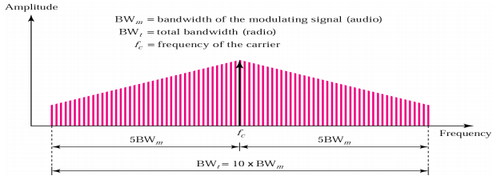
- \(B_{FM} = 2(1 + β) × B\)
- \(β\) : 변조 기술에 따라 상이하지만 일반적으로 4
- \(B_{FM} = 2(1 + β) × B = 2(1 + 4) × B = 10B\)
- 즉, 변조 신호의 10배 대역폭
- 스테레오 오디오(Stereo Audio : Speech, Music 등)의 대역폭(BandWidth)는 15 KHz
- 따라서 FM 방송국의 최소 대역폭은 150 KHz
- FCC(Federal Communications Commission)는 최소 200 KHz 요구
- FCC : 미국 연방 정부 산하의 독립 규제 기관
FM 라디오의 표준 대역 할당¶
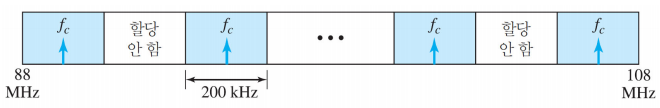
- 스테레오 오디오 신호 대역폭 : 15 kHz
- 각 FM 방송국은 최소 150kHz 대역폭 필요
- 각 방송국에 200kHz(0.2MHz) 할당
- FM 방송국은 88 MHz ~ 108 MHz를 사용
- 88 MHz ~ 108 MHz 사이에 100개의 station 설치 가능
- 주변 주파수의 충돌 방지를 위해 50개씩 번갈아 사용
위상 변조(PM : Phase Modulation)¶
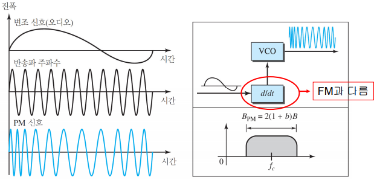
- 반송파 신호(Carrier Signal)의 위상이 변조 신호의 전압 준위의 변화에 따라 변조
- 반송파 신호(Carrier Signal)의 약한 최대 진폭(Peak amplitude)과 주파수(Frequency)는 불변
- 반송파 주파수(Carrier Frequency)의 변화는 신호 진폭(Amplitude)의 미분과 비례
- PM의 전체 대역폭은 변조되는 신호의 대역폭과 최대 진폭에 따라 결정
위상 변조의 대역폭(BandWidth)¶
- \(B_{PM} = 2(1 + β) × B\)
| \(β\) 유형 | \(β\) 값 |
|---|---|
| 좁은 대역(Narrow Band) | 1 |
| 넓은 대역(Wide Band) | 3 |